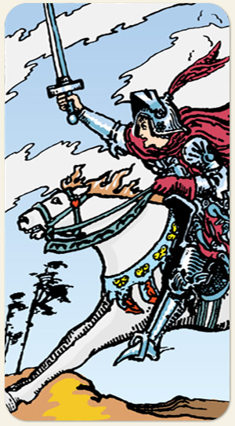

O movimento, a energia do fogo em busca do conhecimento, do que é mental e da busca por informação. Na imagem: armada com desenhos de seres alados, o vento afeta o tanto as nuvens quanto a crina do cavalo e a roupa que o cavaleiro usa, tudo fala sobre movimento. Alguns cavalos recebem o nome de Ventania
Positivo: Pessoas que buscam estudos, rede de contatos, viagens para lugares distantes, pessoas que compartilham seu conhecimento, é um movimento rápido, é uma notícia que chega logo, acesso a altos estudos, intercâmbios, pessoas que se expressam com eloquência, um pregador de boas novas.
Negativo: Movimento para espalhar o mau conhecimento, expandir a má informação, é a Fake News, a fofoca, os boatos, informação afiada que separa as pessoas, conhecimento superficial, espionagem, o stalker, falar sem em medir as palavras, falar muito de algo que se sabe pouco.
Símbolos: Cavalo Branco, Cavalo a Galope, Armadura, Pena Vermelha, Capa Vermelha, Espada em Riste, Nuvens Pontiagudas, Olhar para Frente, Árvores, Terreno Acidentado.
Cores: Cor, Cor, Cor, Cor.